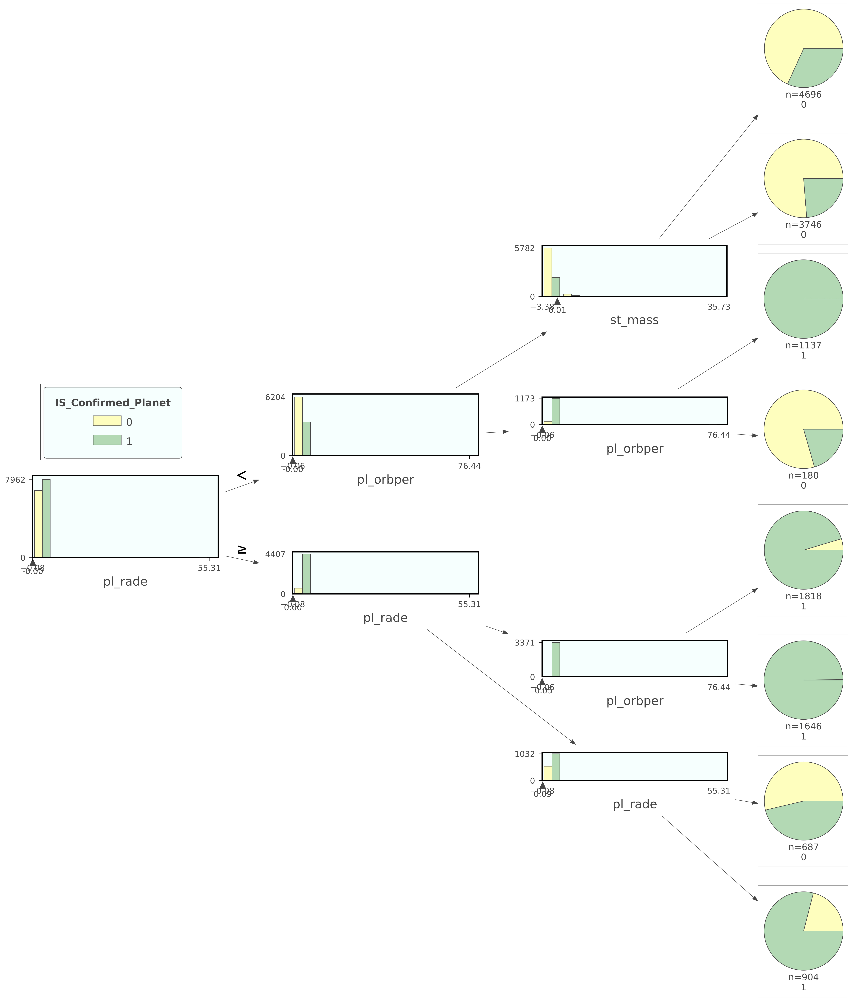

NASA Exoplanets
{kind=link}
Exoplanets are planets outside our solar system. Is the exoplanet Confirmed?
Above is an artist's rendering of NASA's Kepler Space Telescope in search of them.NASA documents 4,164 and counting "Confirmed" exoplanets discovered so far and thousands of other "Candidate" planets. Below is the process I used to create data models using telescope observations to predict a planet's status.
As of writing this there are 4,164 "confirmed" exoplanets and the other "candidate" planets require more study to be confirmed. The discovery method most often successful is the transit method as the exoplanet passes in between it's star and the telescope. The dimming of the light from that star can then be measured and the orbit studied.
I chose the Planetary Systems Alpha release dataset (link) which is essentially all the planetary data combined. The data is 26,336 rows and 118 columns. I looked at the columns and some had too many missing values, others were not helpful to predict if it was a confirmed planet, or the column variable was hard to understand.
Links to follow along:
- Exoplanet Catelog.
- Planetary Systems Data being used.
- Colab Notebook for visual data anaylsis.
- Github Notebook for my predictive models.
- Kepler Data explored on Kaggle by Ewald Zietsman.
The first thing was to explore the data columns. Initially I had 118 different data columns so I narrowed it down to 25. Out of these 22 were numeric data types and 3 were categorical types. I'm first going to describe the numeric columns of planetary data.
Numeric Columns
Heatmap
The heatmap shows any correlations between the columns.
- Each column shows up once on the left margin and again at the bottom.
- The diagonal line is created because of course the column is highly correlated with itself.
- "dec" and "ra" are the location cooridinates of the planets.
- The columns beginning with "sy" refer to the planetary systems. Notice how they're grouped together and create a pattern.
- The columns begining with "pl" refer to the exoplanets. "pl_radj" and "pl_rade" refer to the radii or radiuses of the planets measured in units of Jupiters and Earths. There are definitely some correlations among these.
- The columns begining with "st" refer to the star the exoplanet orbits. Notice how these create a pattern.
"pl_eqt" is the planet's temperature.
This boxplot shows Confirmed planets in magenta have on average a warmer temperature.
"pl_orbper" is orbit time in days and "pl_ratdor" is a ratio of distance.
This scatterplot shows Confirmed planets in teal are more closely grouped with shorter orbit times. Overall, the farther away a planet is the longer time it takes to orbit the star.
"pl_trandep" is flux caused by transit of the planet and "pl_radj" is the planet radius measured in Jupiter units.
This scatterplot shows Confirmed planets in green cause more flux or change in brightness of the star by their transit. Overall, larger planets cause more flux.
"pl_trandurd" is the transit duration in hours. "pl_rade" is the planet radius in earth units. "st_mass" is the stellar mass (Click to enlarge).
The transit duration in hours will be a very important predictor (see feature importances) because it's longer for planets that have NOT been confirmed. The stellar masses on the y axis shows little difference. Planet radii on the color bar shows some differences especially if you zoom in. To zoom in click on the graph and there's a tool bar at the top right to zoom and a pan tool to see different areas.
"pl_imppar" is the distance of planet to star. "pl_ratror" is the ratio of planet to star radius.
This linear regression scatter plot shows Confirmed and Candidate planets are grouped differently. The linear trendlines are different too.
"pl_ratdor" is a ratio of the planet's distance. "pl_eqt" is the planet's temperature.
As the distance increases (X axis) the planet temperature decreases (y axis). So distance and temperature are correlated by if the planet is cooler it must be farther away from it's star.
"ra" is the planet's longitude east and west coordinates."dec" is the planet's latitude north and south coordinates."st_mass" is the stellar mass (Click to enlarge).
Right ascension and declination are the equivalent of longitude and latitude for an objects celestial coordinates. Here it's easy to see all the KOI's or Kepler Objects of Interest discovered as they're all grouped together. Kepler in it's original operational condition no longer works the same but is now functioning as K2. The new mission is now TESS or Transiting Exoplanet Survey Satellite.
Categorical Columns
"discoverymethod" is obviously how the planet was discovered.
Radial Velocity is when the star moves slightly responding to the gravitational pull of its smaller companion. Transit is clearly the most common and is how Kepler found it's objects of interest including confirmed and candidate planets.
"disc_locale" is of course where the planet was discovered.
Planets discovered on the ground are more likely to be confirmed planets. The clear majority of the rest of planets were discovered in space by Kepler that can reach farther and see better images.
"st_metratio" is the star's metal ratio.
Ratio for the Metallicity Value [Fe/H] denotes iron abundance, [M/H] refers to a general metal content. So there are more Candidate unconfirmed planets in the iron column and more Confirmed planets in the general metal column.
Predicative Model Making - Is the exoplanet confirmed or not?
Baseline & Logistic Regression (LR) Model
Using the numeric columns: "pl_eqt", "pl_orbper", "pl_ratdor", "pl_trandep", "pl_radj", "pl_ratror", "pl_imppar", "st_mass", "pl_trandurd", "pl_rade", "ra", "dec" and the categorical columns "st_metratio", "discoverymethod", "disc_locale"
- The best guess would be True because True's have a 53.7465% majority.
- The first predictive model using Logistic Regression improved the best guess prediction to a 90.1782% certainty.
Confirm Logistic Regression Score
- There were a total of 4,938 predictions made and 4,453 were right so 485 were wrong giving the model score a 90.2%
- The model's score was confirmed by dividing the number of correct predictions by the total number of predictions.
- The first 5 LR Model predictions were printed out along with the planet name and status.
LR feature importances (permuted)
- Obviously the features with the most green were the most important to the model's success.
- There are a lot of features here that aren't helping the model so let's run it again using the best features.
LR with top features
Out of all the 30 features we really only needed 11 to create a predictive model.
Decision Tree Model
Using only these columns:"pl_rade", "pl_orbper", "st_mass", "discoverymethod"
Here are some visuals understanding how a Decision Tree made predictions for this new model. The first is a decision tree model with max_depth set at 4.
Another Decision Tree Visual using this Library (link) with the max_depth set at 3.
Random Forest Model
Continuing with the same columns: "pl_rade", "pl_orbper", "st_mass", "discoverymethod"
The Random Forest Model feature importances.

Random Forest Model with adjusted parameters improves the score. The default of 100 n_estimators was changed to 200, the default max_depth of None was changed to 15, and the default min_samples_split of 2 was changed to 5. The default min_samles_leaf was the only one not changed and left at 1.
Cross Validation Model and Summary
Same columns: "pl_rade", "pl_orbper", "st_mass", "discoverymethod"
A summary of all the models ran with the same 4 features showing improvement. Cross Validation has the best results as seen below. It took about 5 minutes to train, validate, and test.
The Confusion Matrix of the Cross Validation Model just shows the correct true & false predictions match and the totals are correct.
Conclusion
This was a big dataset so it was really helpful to reduce the number of columns to better understand them. Beginning with the Logistic Regression Model more columns were used to initially train the model. Starting with 12 numeric and 3 categorical columns. The 3 categorical columns would later become 18 features after being seperately encoded. For instance, the column "st_metratio" became 5 seperate features. The column "discoverymethod" became 9 and "disc_locale" would become 4 to create 18. Those added to the 12 numeric features created a total of 30 features. The model was then trained and again with only 11 of the most important features.
Using all the same features for the Decision Tree Model it was able to fit itself to almost 100%. So using 3 numeric columns and 1 categorical column it gave the Decision Tree and other Models more of a challenge. After running a Random Forest and changing the parameters the score improved. The best predictive model score with those 4 columns came from a Cross Validation Model with 5 folds of 20 iterations. It took 5 minutes to train and make it's predictions on the test set.
For this project I learned a lot about exoplanets and data modeling in the process. I hope to continue learning and thank you for following along.